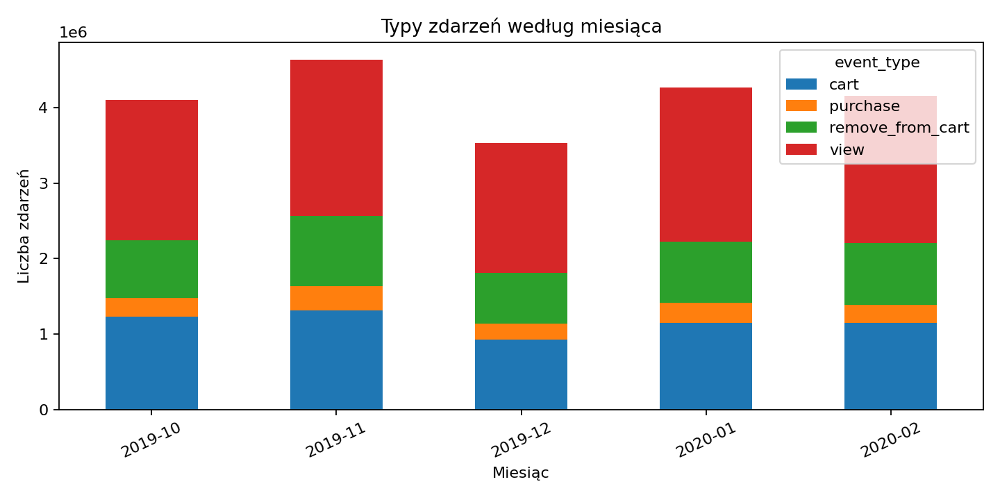
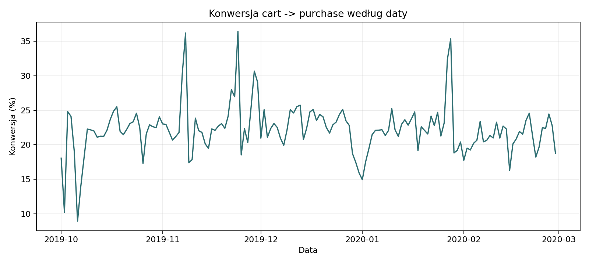
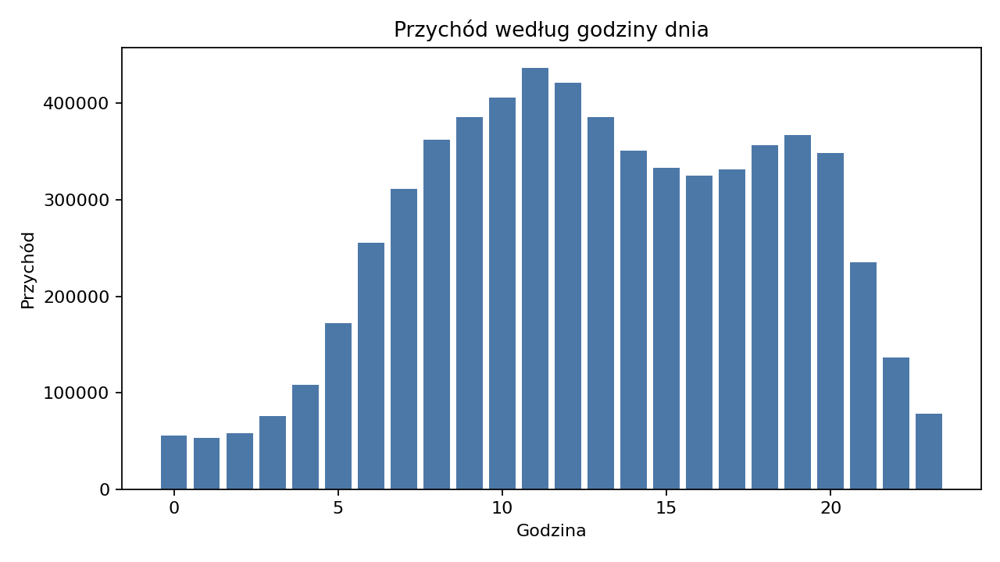
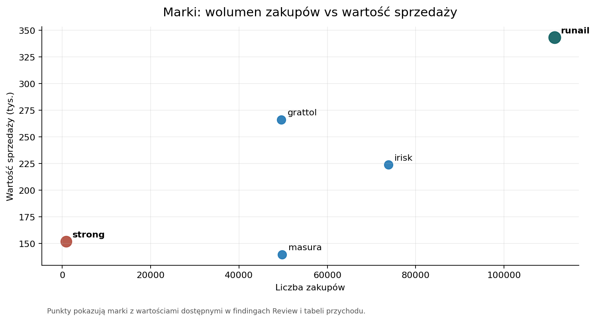

prezentacja
Od zdarzeń e-commerce do hipotez marketingowych
Punkt wyjścia
W danych nie szukamy tylko ruchu w sklepie.
Szukamy odpowiedzi, które zachowania tworzą wartość i jak zamienić je w testowalne działania marketingowe.
Skala
- 20,7 mln zdarzeń
- 1,64 mln użytkowników
- 4,54 mln sesji
- okres: 2019-10-01 – 2020-02-29
To jest pełny zbiór kosmetyczny, więc raport oddziela ogólną aktywność od wartości sprzedażowej.
Najpierw filtrujemy wartość

Typy zdarzeń według miesiąca
Zakupy to tylko 6,22% wszystkich zdarzeń.
Pozostała aktywność mówi o zainteresowaniu, koszyku i korektach, ale przychód liczymy wyłącznie na purchase.
Przychód jest skoncentrowany

Przychód dzienny w pełnych danych
110,5 tys. kupujących wygenerowało 6,35 mln wartości sprzedaży.
Kluczowy wniosek
Wraz z rozszerzeniem grupy z 10% do 20% kupujących obejmujemy 43% -> 59% przychodu.
Wniosek: rekomendacje nie powinny traktować całej bazy tak samo.
Ceny mają długi ogon

Rozkład cen zakupów
Mediana ceny zakupu to 3,00, a średnia 4,93.
Dlatego cechy wartościowe wymagają transformacji przed modelowaniem.
RFM porządkuje kupujących
RFM opisuje klientów przez:
- świeżość ostatniego zakupu,
- liczbę pozycji zakupowych,
- sumę wartości
price.
To model dla kupujących, nie dla wszystkich użytkowników.
Pierwszy model: KMeans na RFM

Segmentacja klientów na podstawie RFM
Pierwszy model grupuje kupujących według świeżości, częstotliwości i wartości zakupów.
Pięć klastrów ma porównywalną skalę: najmniejszy obejmuje 10,69% kupujących, a pozostałe około 19-24%.
Od klastra do profilu klienta
Numer klastra, np. Klaster 0, jest tylko etykietą techniczną.
Znaczenie biznesowe pojawia się dopiero po odczytaniu profilu: świeżości, liczby pozycji zakupowych, wartości sprzedaży i udziału w przychodzie.
Drugi model: aktywność użytkowników

Segmenty zachowań użytkowników
Drugi model nie zaczyna od RFM. Grupuje wszystkich użytkowników według liczby akcji, liczby sesji i poziomu cenowego interakcji.
Jeden segment obejmuje 58,55% użytkowników, więc najpierw interpretujemy skalę i aktywność, a dopiero potem hipotezy ofertowe.
Gdzie użytkownicy rezygnują
Relacja purchase/cart wynosi 22,31%.
remove_from_cart odpowiada za 68,99% liczby dodań do koszyka.
Dużo zdarzeń kończy się na koszyku lub usunięciu z koszyka, więc warto sprawdzić, gdzie użytkownicy rezygnują przed zakupem.
Konwersja wymaga ostrożności

Konwersja cart -> purchase według daty
To nie jest pełny funnel zamówienia.
Wskaźnik porównuje liczby zdarzeń, a nie śledzi jednej konkretnej sesji od koszyka do zakupu.
Rytm zakupów jest inny niż rytm ruchu

Przychód według godziny dnia
Zdarzenia ogółem mają szczyt około 19:00, a zakupy około 11:00.
To sugeruje osobne testowanie komunikacji dla przeglądania i finalizacji zakupu.
Cross-sell zaczyna się od marek
Reguły asocjacyjne wskazują runail jako częsty element koszyka po zakupach marek takich jak irisk, grattol, ingarden i bpw_style.
Ograniczenie: brand ma 42,32% braków, więc reguły opisują tylko rozpoznaną część katalogu.
Marki mają różne role

Marki według wolumenu zakupów i wartości sprzedaży
runail łączy największy wolumen i przychód, a strong ma niski wolumen przy wysokiej wartości sprzedaży.
Co rekomendować
- Chronić klientów wysokowartościowych.
- Rozwijać kolejny zakup przez cross-sell.
- Oddzielnie testować aktywizację nowych kupujących.
- Finansować reaktywację ostrożnie.
- Mierzyć efekt po zakupach, przychodzie i retencji.
Co musi zostać hipotezą
Dane opisują przychód, nie zysk.
Brakuje marży, kosztów kampanii, efektów A/B i jednoznacznego identyfikatora zamówienia.
Jak czytać wynik
To case study prowadzi od danych, przez wyniki i segmenty, do rekomendacji wymagających walidacji.
Najważniejsza decyzja nie brzmi: “komu wysłać kampanię?”, tylko: które hipotezy warto najpierw przetestować.